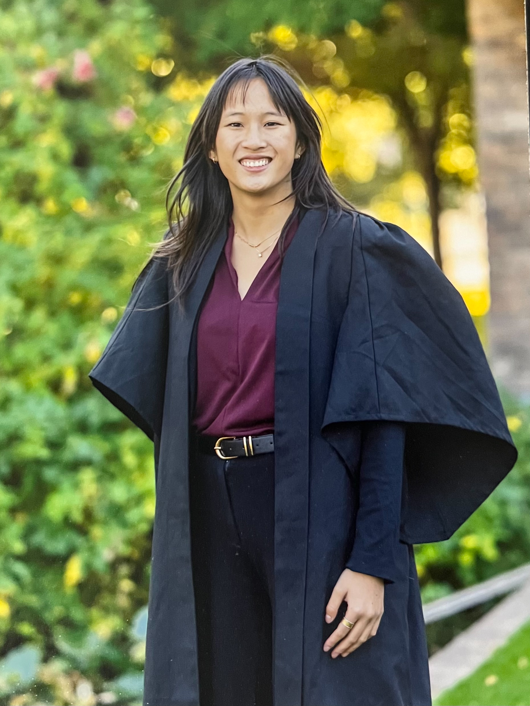

MPhil in Advanced Computer Science University of Cambridge · Churchill College

I’m an MPhil student at Cambridge working with Rob Mullins. I study how language models reason about software and how to check their conclusions against what the program actually does.
Before Cambridge, I studied computer science at the University of North Florida and spent a summer at Sandia National Laboratories evaluating coding agents. My current work asks how to judge a fix when the tests cover only a few ways the bug can show up.
University of Cambridge · MPhil thesis in progress
A patch can pass the test that exposed a bug and still leave the program vulnerable on a case the test missed. I’m exploring how language models and formal methods can help decide whether a fix holds beyond the examples we already know.
Coding agents in existing software
Sandia National Laboratories · Internship with Reed Milewicz, summer 2026
I built an evaluation pipeline that varied task complexity and the strength of misleading inputs. I wanted to know whether an agent makes the same kinds of mistakes when the code is harder to understand as when the information it receives points it in the wrong direction.
I also coauthored a paper on research software quality that looks at how researchers judge and maintain software they build with AI assistance.
RAMP · Detecting physics misconceptions in student writing
University of North Florida · Research with Indika Kahanda
A student can get the answer right while their explanation reveals a misconception. I designed prompts to look for those misconceptions in short answers and compared the models’ assessments with instructor annotations.
InfraLearn · Cybersecurity education for energy systems
UNC Charlotte · NSF Research Experience for Undergraduates, 2025
I built a Python and Flask simulator modeled on the interface of a solar monitoring gateway. It let students without a computer science background explore how a networked energy device behaves without needing access to physical equipment.
UNF Office of Undergraduate Research · January 2026
Teaching & Service
At UNF, I helped teach the undergraduate compilers course and organized workshops and industry panels as president of the Women in Cybersecurity chapter. I graduated in 2026 with a B.S. in computer science and a minor in leadership.
Outside the lab, I like hiking and traveling. I’ve summited 4 state peaks so far: Mount Elbert in Colorado, Guadalupe Peak in Texas, Wheeler Peak in New Mexico, and Mount Rogers in Virginia.